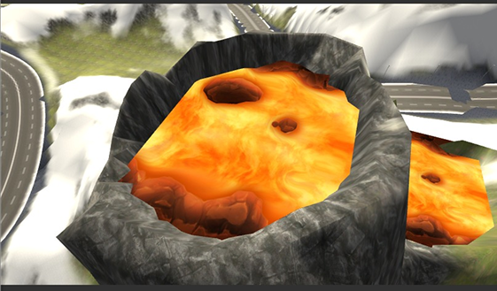
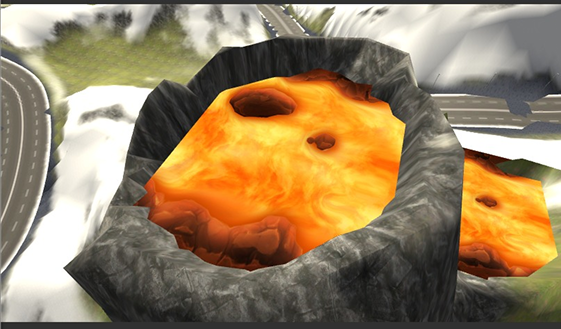

¡Bienvenido a mi Portfolio! Soy Juan Ignacio Crouzat, un diseñador digital y desarrollador web de Argentina con 3 años de experiencia. Me dedico a diseñar páginas web, solo con la idea base que mis clientes me pidan. Tengo páginas desarrolladas en múltiples proyectos. Usando herramientas de diseño, creatividad y realizando una buena planificación logré desarrollar diversos proyectos.
Español
Inglés
Figma
Blender
“Se ve como un Portfolio muy profesional y con simpleza, pero tiene todo lo que uno busca mientras lo explora”
“Él ofrece bien sus servicios y genera confianza con las propuestas que muestra”
“Se siente fluido y rapido, exactemente como tendria que ser un Portfolio ”
Me llamo Juan Ignacio Crouzat, comencé a diseñar mis primeros logos y pantallas estando en tercer año de secundario, actualmente estoy terminando de cursar mi último año, en la escuela ORT Argentina - sede Belgrano. Siempre pensé al arte o al diseño como una tarea fácil de realizar basándome en estereotipos de la sociedad pero cada día al adentrarme más y más me di cuenta que no es así, todo diseño tiene detrás un trabajo exhaustivo.
Estos últimos 3 años estuve desarrollando proyectos académicos en los que tomé el rol de principal diseñador. Más adelante lo verán, desarrollé en conjunto con compañeros de curso, una aplicación para concientizar y que el público en general tenga más conocimiento sobre el lenguaje de señas. Otro proyecto fue un videojuego de simulador de manejo de primera persona junto a un compañero de tomo la tarea de programar.
Mi objetivo hoy en día es seguir practicando y mejorando mis habilidades y a la vez aprender nuevas, trabajar de manera creativa y más que nada demostrar lo que soy y mi manera de trabajar con cada proyecto que me toque ser parte.
Aplicación de escritorio para aprender Lengua de Señas Argentina mediante videos, actividades y reconocimiento de señas con cámara; incluye seguimiento de progreso y estadísticas del usuario, con un diseño minimalista enfocado en accesibilidad y usabilidad. Utilicé Figma.

 

Videojuego de carreras de autos desarrollado en Unity con físicas personalizadas, sistema modular de componentes, economía interna, múltiples modos de carrera y pruebas de rendimiento del vehículo. Incluye personalización completa del auto, tienda interna y modelado 3D realizado en Blender. Se uso Unity, C# y Blender.